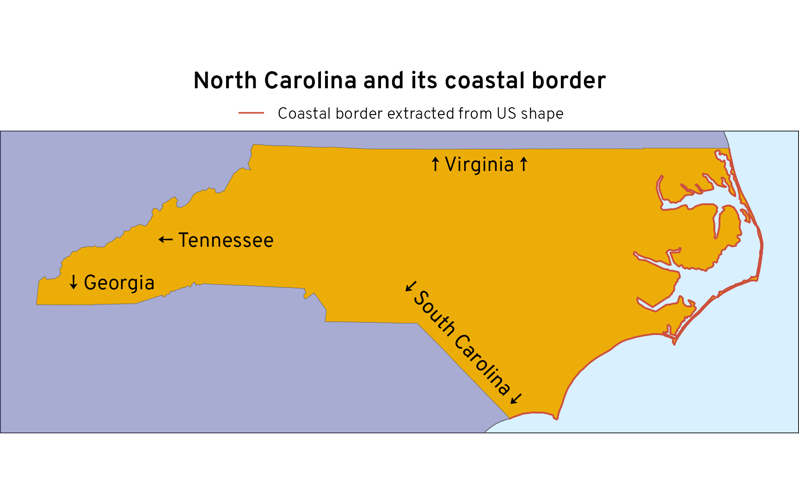

![]()
library(tidyverse)
library(tigris)
library(sf)
library(rnaturalearth)
library(patchwork)
library(gt)
clrs <- rcartocolor::carto_pal(12, "Prism")
clr_ocean <- colorspace::lighten("#88CCEE", 0.7)
# Custom ggplot theme to make pretty plots
# Get the font at https://fonts.google.com/specimen/Overpass
theme_map <- function() {
theme_void(base_family = "Overpass Light") +
theme(
plot.title = element_text(family = "Overpass", face = "bold", hjust = 0.5),
plot.subtitle = element_text(family = "Overpass", face = "plain", hjust = 0.5)
)
}
update_geom_defaults("text", list(family = "Overpass"))A few days ago, my wife, a bunch of my kids, and I were huddled around a big wall map of the United States, joking about the relative unimportance of Rhode Island, the smallest state in the US. It’s one of the states I never ever think about:
…and it’s just so small.
Amid the joking, my wife came to Rhode Island’s defense by declaring that even though it’s so small, it has one of the highest proportions of coastline to land borders. We all gave it a metaphorical gold star for being so maritime-y and moved on with our days.
But as I thought about it later, I got curious about how much of Rhode Island’s border really is coastline and how that proportion compares to other states. New England in general has lots of inlets and islands; North Carolina has the complex Outer Banks; Louisiana has the Mississippi Delta; Michigan is split into two parts and surrounded by the Great Lakes; Florida is Florida. Lots of other states have lots of coastline.
Using R, the extremely powerful {sf} package for working with geospatial data, and some high quality public domain geographic data, we can find the actual answers about coastline proportions. Spoilers: Rhode Island does really well, as expected.
But doing this is a lot more complicated than you might think, both for technical reasons and for philosophical reasons.
Let’s explore this data and make some pretty maps!
Use US Census data on states and coastlines
At first glance, calculating the proportion of coastline borders in states feels fairly straightforward. We take state boundaries, find where they intersect with coastline boundaries, extract those overlapping sections, and voilá—we’re done.
The US Census Bureau even has shapefiles ready to use, like US state borders and the national coastline for 2023, and the {tigris} package makes it really easy to load that data directly into R.
First, let’s grab US state data at medium resolution (1:5 million) and calculate the length of each state’s border. To make calculations easier, we’ll change the projection to Albers, which measures distances in meters instead of the default NAD 83 decimal degree system.
census_states <- states(
cb = TRUE, resolution = "5m", year = 2023,
progress_bar = FALSE, keep_zipped_shapefile = TRUE
) |>
st_transform(crs = st_crs("ESRI:102003")) |> # Albers
mutate(
border_length = st_perimeter(geometry),
border_length_miles = units::set_units(border_length, "miles")
)
census_states |>
select(NAME, border_length, border_length_miles)
## Simple feature collection with 56 features and 3 fields
## Geometry type: MULTIPOLYGON
## Dimension: XY
## Bounding box: xmin: -10430000 ymin: -1685000 xmax: 3408000 ymax: 5141000
## Projected CRS: USA_Contiguous_Albers_Equal_Area_Conic
## First 10 features:
## NAME border_length border_length_miles geometry
## 1 New Mexico 2389194 [m] 1484.6 [miles] MULTIPOLYGON (((-1231344 -5...
## 2 Puerto Rico 683648 [m] 424.8 [miles] MULTIPOLYGON (((3306526 -15...
## 3 Texas 6218137 [m] 3863.8 [miles] MULTIPOLYGON (((-1e+06 -570...
## 4 Kentucky 2097216 [m] 1303.1 [miles] MULTIPOLYGON (((584560 -886...
## 5 Ohio 1614692 [m] 1003.3 [miles] MULTIPOLYGON (((1094061 536...
## 6 Georgia 1950980 [m] 1212.3 [miles] MULTIPOLYGON (((939223 -230...
## 7 Arkansas 2117255 [m] 1315.6 [miles] MULTIPOLYGON (((122656 -111...
## 8 Oregon 2301152 [m] 1429.9 [miles] MULTIPOLYGON (((-2285910 94...
## 9 Pennsylvania 1579842 [m] 981.7 [miles] MULTIPOLYGON (((1287712 486...
## 10 Missouri 2357068 [m] 1464.6 [miles] MULTIPOLYGON (((19009 34499...Next we’ll grab coastline data and also convert it to the meter-based Albers projection:
census_coastline <- coastline(
year = 2023, progress_bar = FALSE, keep_zipped_shapefile = TRUE
) |>
st_transform(crs = st_crs("ESRI:102003"))
census_coastline
## Simple feature collection with 4236 features and 2 fields
## Geometry type: LINESTRING
## Dimension: XY
## Bounding box: xmin: -10430000 ymin: -1685000 xmax: 3408000 ymax: 5140000
## Projected CRS: USA_Contiguous_Albers_Equal_Area_Conic
## First 10 features:
## NAME MTFCC geometry
## 1 Atlántico L4150 LINESTRING (3232962 -158263...
## 2 Atlántico L4150 LINESTRING (3282570 -157424...
## 3 Atlántico L4150 LINESTRING (3278311 -157345...
## 4 Atlántico L4150 LINESTRING (3283967 -157426...
## 5 Atlántico L4150 LINESTRING (3282914 -157442...
## 6 Atlántico L4150 LINESTRING (3282240 -157431...
## 7 Atlántico L4150 LINESTRING (3280919 -157406...
## 8 Atlántico L4150 LINESTRING (3276748 -157350...
## 9 Atlántico L4150 LINESTRING (3276791 -157363...
## 10 Atlántico L4150 LINESTRING (3286366 -157464...This coastline data isn’t state-based—instead, each row represents a segment of the US coastline. Here’s what it looks like when plotted:
ggplot() +
geom_sf(data = census_coastline, linewidth = 0.1) +
labs(title = "US Census coastline data") +
coord_sf(crs = st_crs("ESRI:102003")) +
theme_map()To find where the two maps intersect, we can use st_intersection(), and then we can calculate the length of each combined segment with st_length():
census_combined <- census_states |>
st_intersection(census_coastline) |>
mutate(coastline_length = st_length(geometry))
census_combined |>
select(NAME, border_length, coastline_length, geometry)
## Simple feature collection with 1276 features and 3 fields
## Geometry type: GEOMETRY
## Dimension: XY
## Bounding box: xmin: -10430000 ymin: -1685000 xmax: 3408000 ymax: 5140000
## Projected CRS: USA_Contiguous_Albers_Equal_Area_Conic
## First 10 features:
## NAME border_length coastline_length geometry
## 2 Puerto Rico 683648 [m] 119.450 [m] LINESTRING (3282570 -157424...
## 2.1 Puerto Rico 683648 [m] 12.122 [m] LINESTRING (3282914 -157442...
## 2.2 Puerto Rico 683648 [m] 722.088 [m] LINESTRING (3282240 -157431...
## 2.3 Puerto Rico 683648 [m] 5.332 [m] LINESTRING (3280919 -157406...
## 2.4 Puerto Rico 683648 [m] 2014.901 [m] LINESTRING (3279028 -157391...
## 2.5 Puerto Rico 683648 [m] 2446.737 [m] LINESTRING (3081263 -163791...
## 2.6 Puerto Rico 683648 [m] 12209.219 [m] MULTILINESTRING ((3306976 -...
## 2.7 Puerto Rico 683648 [m] 2804.085 [m] MULTILINESTRING ((3178034 -...
## 2.8 Puerto Rico 683648 [m] 7978.399 [m] MULTILINESTRING ((3230856 -...
## 2.9 Puerto Rico 683648 [m] 6004.139 [m] MULTILINESTRING ((3172336 -...Some of these segments are thousands of miles; some are only a few miles. We can do some grouping and summarizing to collapse these into single values for each state. border_length is a state-level variable, not a border-segment-level variable, so it’s repeated in each of the rows of the combined dataset, so we only need to keep one of the values—here I keep the max, but min would work (since they’re the same).
coastline_length_by_state <- census_combined |>
st_drop_geometry() |> # Stop worrying about geographic stuff
group_by(NAME) |>
summarize(
total_coastline_length = sum(coastline_length),
total_perimeter = max(border_length),
prop_coastline = as.numeric(total_coastline_length / total_perimeter)
)
coastline_length_by_state
## # A tibble: 35 × 4
## NAME total_coastline_length total_perimeter prop_coastline
## <chr> [m] [m] <dbl>
## 1 Alabama 192355. 1907670. 0.101
## 2 Alaska 19223761. 29671399. 0.648
## 3 American Samoa 175827. 172059. 1.02
## 4 California 1129738. 4191420. 0.270
## 5 Commonwealth of the Northern Mariana Islands 261865. 327378. 0.800
## 6 Connecticut 77127. 574613. 0.134
## 7 Delaware 110370. 433573. 0.255
## 8 Florida 1842297. 3795469. 0.485
## 9 Georgia 114280. 1950980. 0.0586
## 10 Guam 120734. 133668. 0.903
## # ℹ 25 more rowsAt first glance, this looks fine. We have each state’s total border length, coastline length, and a proportion. Neat.
But some of these proportions look wrong, like Hawaiʻi:
According to this, only 50% of Hawaiʻi’s borders are on the coast. That’s obviously wrong—that state shares no borders with other states and it’s in the middle of the Pacific Ocean.
If we plot the two datasets, we can see what’s going on. First, the resolutions of the state data and coastline data don’t quite match. Check out Oʻahu here—the purple coastline crosses some bays and misses some of the landmass:
# Extract the state boundaries
census_hi <- census_states |> filter(NAME == "Hawaii")
# Extract the bounding box around the state so we can zoom in on the coastline map
bbox_hi <- census_hi |> st_transform(st_crs("EPSG:4269")) |> st_bbox()
ggplot() +
geom_sf(data = census_hi, linewidth = 0.1, fill = clrs[5]) +
geom_sf(data = census_coastline, aes(color = "US Census coastline data")) +
annotate(geom = "text", x = I(0.425), y = I(0.89), label = "Oʻahu") +
annotate(
geom = "rect",
xmin = I(0.35), xmax = I(0.5), ymin = I(0.63), ymax = I(0.85),
color = clrs[12], fill = NA, linetype = "21"
) +
scale_color_manual(values = c(clrs[11])) +
labs(title = "Hawaiʻi", color = NULL) +
coord_sf(
xlim = bbox_hi[c(1, 3)],
ylim = bbox_hi[c(2, 4)],
crs = st_crs("EPSG:4269")
) +
theme_map() +
theme(legend.position = "top")This mismatch between datasets is even more obvious if we look at a state like North Carolina. The actual landmass in the Outer Banks along the east coast is complex, with all sorts of inlets and a big long barrier island, but the Census simplifies it down substantially (with good reason(!) as we’ll see later):
census_nc <- census_states |> filter(NAME == "North Carolina")
bbox_nc <- census_nc |> st_transform(st_crs("EPSG:4269")) |> st_bbox()
ggplot() +
geom_sf(data = census_nc, linewidth = 0.1, fill = clrs[6]) +
geom_sf(data = census_coastline, aes(color = "US Census coastline data")) +
annotate(
geom = "rect",
xmin = I(0.57), xmax = I(0.97), ymin = I(0.005), ymax = I(0.995),
color = clrs[12], fill = NA, linetype = "21"
) +
scale_color_manual(values = c(clrs[11])) +
labs(title = "North Carolina", color = NULL) +
coord_sf(
xlim = bbox_nc[c(1, 3)],
ylim = bbox_nc[c(2, 4)],
crs = st_crs("EPSG:4269")
) +
theme_map() +
theme(legend.position = "top")This mismatch in borders and coastlines matter a lot for calculations. We’re using st_intersection() to find where the two maps overlap. If the two maps are misaligned, we can’t identify the correct overlaps, which means we can’t identify the full coastal border. Remember how we calculated that only 50% of Hawaiʻi’s borders are coastlines? If we plot the coastal borders of Hawaiʻi, we can see why:
ggplot() +
geom_sf(data = census_combined, linewidth = 0.2) +
labs(title = "Incomplete coastline overlaps in Hawaiʻi") +
coord_sf(
xlim = bbox_hi[c(1, 3)],
ylim = bbox_hi[c(2, 4)],
crs = st_crs("EPSG:4269")
) +
theme_map()There are a couple issues here. The dots scattered along the borders are a sign that there’s some misalignment between the two maps. The borders for the states sometimes cross the coastline borders in a single point instead of following the coast exactly. But the even bigger issue is that these coastlines look sketched out—there are so many major gaps that roughly 50% of the borders are missing. That’s again because of misalignment with the two maps. The borders don’t overlap exactly, so st_intersection() can’t pick them up.
So what do we do? We could try finding different coastline data that matches the same resolution as the Census data. The National Oceanic and Atmospheric Administration (NOAA) and the US Geological Survey (USGS) each have their own shoreline datasets, and we could download those and load them into R and hope that they align with one of the Census’s state maps. But they don’t.
So we give up.
Use the lack of land as the coastline
Just kidding. There’s a better solution.
We already kind of have coastline data embedded in the state map data. For states that border an ocean or lake, anywhere the blue of the water touches the land is technically a coastline. Take Hawaiʻi, for instance, where the whole state border is the coastline:
ggplot() +
geom_sf(data = census_hi, linewidth = 0.1, fill = clrs[5]) +
labs(title = "The islands of Hawaiʻi") +
coord_sf(crs = st_crs("EPSG:4269")) + # NAD83
theme_map() +
theme(
panel.background = element_rect(fill = clr_ocean),
plot.title = element_text(margin = margin(6.5, 0, 6.5, 0))
)When looking at states with interior borders (like the other 49 states), though, the state map data has no way to distinguish which of those borders touch the ocean or touch other states. The east coast of North Carolina touches the ocean, but the northern, southern, and western borders do not. We need to somehow figure out which borders don’t touch other states.
ggplot() +
geom_sf(data = census_nc, linewidth = 0.1, fill = clrs[6]) +
annotate(geom = "text", x = I(0.6), y = I(0.89), label = "↑ Virginia ↑") +
annotate(geom = "text", x = I(0.58), y = I(0.3), label = "↓ South Carolina ↓", angle = 313) +
annotate(geom = "text", x = I(0.14), y = I(0.5), label = "↓ Georgia") +
annotate(geom = "text", x = I(0.27), y = I(0.64), label = "← Tennessee") +
labs(title = "The “island” of North Carolina") +
coord_sf(crs = st_crs("EPSG:4269")) + # NAD83
theme_map() +
theme(
panel.background = element_rect(fill = clr_ocean),
plot.title = element_text(margin = margin(6.5, 0, 6.5, 0))
)We do have data about Virginia, South Carolina, Tennessee, and Georgia, though, so there is a way to know that those borders aren’t ocean borders.
One way to determine which borders are interior and which ones are coastal is to create a big unified shape of the United States and then use the shape of North Carolina as a kind of cookie cutter. We can assume that any exposed edges are coasts.
First, we’ll make our big unified country shape:
census_us_giant <- census_states |>
st_union() |>
st_transform(crs = st_crs("ESRI:102003"))
ggplot() +
geom_sf(data = census_us_giant, linewidth = 0, fill = clrs[1]) +
labs(title = "One big US-shaped shape") +
theme_map() +
theme(
panel.background = element_rect(fill = clr_ocean),
plot.title = element_text(margin = margin(6.5, 0, 6.5, 0))
)Before trying this with North Carolina, we’ll test the cookie cutter selection with Hawaiʻi, since we know that 100% of its borders are coastlines. If we use the Hawaiʻi shape to take a chunk out of the overall US shape, we get…
hi_ocean_border_census <- census_hi |>
st_difference(census_us_giant)
ggplot() +
geom_sf(data = hi_ocean_border_census) +
labs(title = "lol nothing") +
theme_map() +
theme(
panel.border = element_rect(color = "black", fill = clr_ocean),
plot.title = element_text(margin = margin(6.5, 0, 6.5, 0))
)…nothing.
The state cookie cutter was too perfect and selected right up to the edge of the overall country, leaving nothing.
To fix this, we can expand the state shape just a tiiiiiiny bit. We can use st_buffer() to add a tiny amount of distance all around the shape—since we’re using the Albers projection, we’re working in meters, so let’s add just 1 millimeter around the border before finding the difference:
hi_ocean_border_census <- census_hi |>
st_buffer(dist = 0.001) |>
st_difference(census_us_giant)
ggplot() +
geom_sf(data = hi_ocean_border_census, linewidth = 0.2) +
labs(title = "Hawaiʻi’s coastal borders extracted from US shape") +
coord_sf(
xlim = bbox_hi[c(1, 3)],
ylim = bbox_hi[c(2, 4)],
crs = st_crs("EPSG:4269")
) +
theme_map()Perfect.
Well, almost perfect. We’ve identified the coastal borders, but adding the buffer actually distorts things when we calculate the length of the border.
Let’s find the coast-to-border proportion for Hawaiʻi, which should be 100%. First we’ll find the perimeter of the state:
hi_border_perimeter <- census_hi |>
st_perimeter()
hi_border_perimeter
## 1413312 [m]
units::set_units(hi_border_perimeter, "miles")
## 878.2 [miles]Hawaiʻi’s border is 1,413,312 meters, or 878 miles. Sounds reasonable.
Next we’ll find the perimeter of the coastline:
hi_ocean_border_perimeter <- hi_ocean_border_census |>
st_perimeter()
hi_ocean_border_perimeter
## 2826623 [m]
units::set_units(hi_ocean_border_perimeter, "miles")
## 1756 [miles]Hrm. Hawaiʻi’s coastline is 2,826,623 meters, or 1,756 miles. That’s actually exactly twice the correct border length:
as.numeric(hi_ocean_border_perimeter / hi_border_perimeter)
## [1] 2This happened because of the 1 mm buffer that we added around the state shape. Adding the buffer transformed the line into a polygon—a super tiny 1 mm-narrow polygon, but a polygon nonetheless. That means the border technically has a top and sides and a bottom. When calculating the length or perimeter of the border, we’re double counting because we’re getting both the top and the bottom of the hyper-thin polygon.
To better illustrate what’s going on, let’s add a three kilometer buffer around the borders.
hi_ocean_border_census_huge_buffer <- census_hi |>
st_buffer(dist = 3000) |>
st_difference(census_us_giant)
ggplot() +
geom_sf(
data = hi_ocean_border_census_huge_buffer,
linewidth = 0.2, fill = colorspace::lighten(clrs[5], 0.5)
) +
labs(title = "Hawaiʻi’s borders with a 3 km buffer") +
coord_sf(
xlim = bbox_hi[c(1, 3)],
ylim = bbox_hi[c(2, 4)],
crs = st_crs("EPSG:4269")
) +
theme_map()Calculating the perimeter of these borders will add the inside ring and the outside ring, effectively doubling the distance.
It’s less obvious that this doubling is happening when we add just 1 mm, but it is, and it’s leading to incorrect calculations. Fortunately it’s easy to adjust—we can halve the ocean border distance. Coastal borders comprise 100% of Hawaiʻi’s state borders, as expected:
as.numeric((hi_ocean_border_perimeter / 2) / hi_border_perimeter) |>
scales::label_percent()()
## [1] "100%"Let’s do the same thing with North Carolina:
nc_ocean_border_census <- census_nc |>
st_buffer(dist = 0.001) |>
st_difference(census_us_giant)
ggplot() +
geom_sf(data = nc_ocean_border_census, linewidth = 0.2) +
labs(title = "North Carolina’s coastal borders extracted from US shape") +
coord_sf(crs = st_crs("EPSG:4269")) +
theme_map()Perfect! Those are all the state borders that don’t touch other states. That’s the coastline.
We can visualize this better by plotting the larger country shape, the North Carolina shape, and the coastal border:
ggplot() +
geom_sf(data = census_us_giant, fill = clrs[1], alpha = 0.4) +
geom_sf(data = census_nc, linewidth = 0.1, fill = clrs[6]) +
geom_sf(
data = nc_ocean_border_census, linewidth = 0.4,
aes(color = "Coastal border extracted from US shape"),
key_glyph = draw_key_path
) +
annotate(geom = "text", x = I(0.6), y = I(0.89), label = "↑ Virginia ↑") +
annotate(geom = "text", x = I(0.58), y = I(0.3), label = "↓ South Carolina ↓", angle = 313) +
annotate(geom = "text", x = I(0.14), y = I(0.5), label = "↓ Georgia") +
annotate(geom = "text", x = I(0.27), y = I(0.64), label = "← Tennessee") +
scale_color_manual(values = c(clrs[8])) +
labs(title = "North Carolina and its coastal border", color = NULL) +
coord_sf(
xlim = bbox_nc[c(1, 3)],
ylim = bbox_nc[c(2, 4)],
crs = st_crs("EPSG:4269")
) +
theme_map() +
theme(
panel.background = element_rect(fill = clr_ocean),
plot.title = element_text(margin = margin(6.5, 0, 6.5, 0)),
legend.key.height = unit(0.5, "lines"),
legend.key = element_rect(fill = NA, color = NA),
legend.position = "top"
)
And we can find the proportion of the state’s borders that are coastline:
nc_border_perimeter <- census_nc |>
st_perimeter()
nc_border_perimeter
## 3498277 [m]
units::set_units(nc_border_perimeter, "miles")
## 2174 [miles]
nc_ocean_border_perimeter <- nc_ocean_border_census |>
st_perimeter()
nc_ocean_border_perimeter / 2
## 1930852 [m]
units::set_units(nc_ocean_border_perimeter / 2, "miles")
## 1200 [miles]
as.numeric((nc_ocean_border_perimeter / 2) / nc_border_perimeter) |>
scales::label_percent()()
## [1] "55%"This approach is great. We don’t need to worry about making sure the coastline map matches the resolution of the state map, since we’re using just one map. Everything aligns perfectly automatically.
BUT there’s one more wrinkle to worry about. This approach gets trickier with states that touch other countries, like Washington, where the western border touches the ocean, the northern border touches Canada, and the eastern and southern borders touch other states. The state data knows about Idaho and Oregon, but it doesn’t know that Canada is there. Washington looks like it has an exterior, ocean-facing western border—Canada is replaced with an ocean.
census_wa <- census_states |> filter(NAME == "Washington")
bbox_wa <- census_wa |> st_transform(st_crs("EPSG:4269")) |> st_bbox()
wa_ocean_border_census <- census_wa |>
st_buffer(dist = 0.001) |>
st_difference(census_us_giant)
ggplot() +
geom_sf(data = census_us_giant, fill = clrs[1], alpha = 0.4) +
geom_sf(data = census_wa, linewidth = 0.1, fill = clrs[3]) +
geom_sf(
data = wa_ocean_border_census, linewidth = 0.4,
aes(color = "Coastal border extracted from US shape"),
key_glyph = draw_key_path
) +
annotate(geom = "text", x = I(0.64), y = I(0.91), label = "↑ Canada (British Columbia) ↑") +
annotate(geom = "text", x = I(0.54), y = I(0.18), label = "↓ Oregon ↓") +
annotate(geom = "text", x = I(0.87), y = I(0.5), label = "Idaho →") +
scale_color_manual(values = c(clrs[8])) +
labs(title = "Washington and the fake Canadian ocean", color = NULL) +
coord_sf(
xlim = bbox_wa[c(1, 3)],
ylim = bbox_wa[c(2, 4)],
crs = st_crs("EPSG:4269")
) +
theme_map() +
theme(
panel.background = element_rect(fill = clr_ocean),
plot.title = element_text(margin = margin(6.5, 0, 6.5, 0)),
legend.key.height = unit(0.5, "lines"),
legend.key = element_rect(fill = NA, color = NA),
legend.position = "top"
)The big US-shaped polygon isn’t big enough for identifying land borders in other countries. In order to identify all the ocean-facing state borders, we need data about Canada and Mexico, and the US Census doesn’t provide that.
So we give up.
Use data from Natural Earth
Just kidding. There’s a better solution.
The Census doesn’t have data on other countries, but other data sources do! The incredible Natural Earth project has a ton of shapefiles for the entire world, both physical (i.e. rivers, coastlines, etc.) and cultural, like borders for countries (what it calls Admin-0) and states/provinces (what it calls Admin-1). It offers three levels of resolution: 1:10 million (high resolution), 1:50 million (medium resolution), and 1:110 million (low resolution).
Plus, like {tigris}, the {rnaturalearth} package makes it really easy to load that data directly into R.
Let’s follow the same process for Hawaiʻi, North Carolina, and Washington using Natural Earth data instead of Census data.
First, we’ll grab high resolution (1:10 million) maps from the Admin-1 (states and provinces) data:
if (!file.exists("ne_data/ne_10m_admin_1_states_provinces_lakes.shp")) {
ne_download(
type = "admin_1_states_provinces_lakes",
scale = 10,
destdir = "ne_data",
load = FALSE
)
}
states_provinces <- ne_load(
type = "admin_1_states_provinces_lakes",
scale = 10,
destdir = "ne_data"
)We only need to work with three countries, not the entire world, so we’ll filter it down to just North America before joining everything into a single shape with st_union():
na_giant <- states_provinces |>
filter(admin %in% c("United States of America", "Canada", "Mexico")) |>
st_union() |>
st_transform(crs = st_crs("ESRI:102003")) # Convert to Albers for meters
ggplot() +
geom_sf(data = na_giant, linewidth = 0, fill = clrs[10]) +
labs(title = "One big North America-shaped shape") +
coord_sf(crs = st_crs("ESRI:102003")) +
theme_map() +
theme(
panel.background = element_rect(fill = clr_ocean),
plot.title = element_text(margin = margin(6.5, 0, 6.5, 0))
)(That’s so pretty.)
Next, we’ll extract all the US states from the Natural Earth data, since we want this big North American shape to match the states exactly:
ne_states <- states_provinces |>
filter(admin == "United States of America") |>
st_transform(crs = st_crs("ESRI:102003"))
ggplot() +
geom_sf(data = na_giant, linewidth = 0, fill = clrs[10]) +
geom_sf(data = ne_states, linewidth = 0.05, fill = clrs[8], color = "white") +
labs(title = "The United States overlaid on North America") +
coord_sf(crs = st_crs("ESRI:102003")) +
theme_map() +
theme(
panel.background = element_rect(fill = clr_ocean),
plot.title = element_text(margin = margin(6.5, 0, 6.5, 0))
)Now we’ll go through the same process as before, using state shapes as cookie cutters from the larger North American shape and extracting non-interior borders.
Hawaiʻi
Here are Hawaiʻi’s extracted borders—because we’re working with high resolution data, we get a lot more detail, including all the Northwestern Hawaiian Islands:
ne_hi <- ne_states |> filter(name == "Hawaii")
bbox_ne_hi <- ne_hi |> st_transform(st_crs("EPSG:4269")) |> st_bbox()
hi_ocean_border_ne <- ne_hi |>
st_buffer(dist = 0.001) |>
st_difference(na_giant)
ggplot() +
geom_sf(data = hi_ocean_border_ne, linewidth = 0.2) +
labs(title = "Hawaiʻi’s coastal borders extracted from North America shape") +
coord_sf(
xlim = bbox_ne_hi[c(1, 3)],
ylim = bbox_ne_hi[c(2, 4)],
crs = st_crs("EPSG:4269")
) +
theme_map()As before, we can calculate the perimeter of the state, the perimeter of the coastline, and find the proportion. It’s 100%, as expected:
# State border
hi_border_perimeter_ne <- ne_hi |>
st_perimeter()
hi_border_perimeter_ne
## 1458906 [m]
units::set_units(hi_border_perimeter_ne, "miles")
## 906.5 [miles]
# Coastal border
hi_ocean_border_perimeter_ne <- hi_ocean_border_ne |>
st_perimeter()
hi_ocean_border_perimeter_ne / 2
## 1458906 [m]
units::set_units(hi_ocean_border_perimeter_ne / 2, "miles")
## 906.5 [miles]
# Proportion
as.numeric((hi_ocean_border_perimeter_ne / 2) / hi_border_perimeter_ne) |>
scales::label_percent()()
## [1] "100%"North Carolina
The same process works for North Carolina
ne_nc <- ne_states |> filter(name == "North Carolina")
bbox_ne_nc <- ne_nc |> st_transform(st_crs("EPSG:4269")) |> st_bbox()
nc_ocean_border_ne <- ne_nc |>
st_buffer(dist = 0.001) |>
st_difference(na_giant)
ggplot() +
geom_sf(data = nc_ocean_border_ne, linewidth = 0.2) +
labs(title = "North Carolina’s coastal borders\nextracted from North America shape") +
coord_sf(crs = st_crs("EPSG:4269")) +
theme_map()Here’s that extracted coastline with the rest of the state:
ggplot() +
geom_sf(data = na_giant, fill = clrs[10], alpha = 0.4) +
geom_sf(data = ne_nc, linewidth = 0.1, fill = clrs[6]) +
geom_sf(
data = nc_ocean_border_ne, linewidth = 0.4,
aes(color = "Coastal border extracted from North America shape"),
key_glyph = draw_key_path
) +
annotate(geom = "text", x = I(0.6), y = I(0.89), label = "↑ Virginia ↑") +
annotate(geom = "text", x = I(0.58), y = I(0.3), label = "↓ South Carolina ↓", angle = 313) +
annotate(geom = "text", x = I(0.14), y = I(0.5), label = "↓ Georgia") +
annotate(geom = "text", x = I(0.27), y = I(0.64), label = "← Tennessee") +
scale_color_manual(values = c(clrs[8])) +
labs(title = "The actual North Carolina coastline", color = NULL) +
coord_sf(
xlim = bbox_ne_nc[c(1, 3)],
ylim = bbox_ne_nc[c(2, 4)],
crs = st_crs("EPSG:4269")
) +
theme_map() +
theme(
panel.background = element_rect(fill = clr_ocean),
plot.title = element_text(margin = margin(6.5, 0, 6.5, 0)),
legend.key.height = unit(0.5, "lines"),
legend.key = element_rect(fill = NA, color = NA),
legend.position = "top"
)Now we can calculate proportion of coastline:
# State border
nc_border_perimeter_ne <- ne_nc |>
st_perimeter()
nc_border_perimeter_ne
## 4095093 [m]
units::set_units(nc_border_perimeter_ne, "miles")
## 2545 [miles]
# Coastal border
nc_ocean_border_perimeter_ne <- nc_ocean_border_ne |>
st_perimeter()
nc_ocean_border_perimeter_ne / 2
## 2596482 [m]
units::set_units(nc_ocean_border_perimeter_ne / 2, "miles")
## 1613 [miles]
# Proportion
as.numeric((nc_ocean_border_perimeter_ne / 2) / nc_border_perimeter_ne) |>
scales::label_percent()()
## [1] "63%"Sharp-eyed readers will notice something odd, though! Using Census maps at 1:5 million resolution, we found that 55% of North Carolina’s borders were coastline. Using Natural Earth maps at 1:10 million resolution, it becomes 63%. I’ll talk more about that discrepancy later in this post (spoiler: it’s because of the new-to-me Coastline Paradox). The detail in the two maps is different, so the amount of landmass visible along the coastline is different, yielding different perimeters and distances.
Washington
When we were using Census data, we couldn’t use this process with Washington because Canada was invisible and was being treated as an ocean. Now that we have data from Natural Earth, Canada can be accounted for and we’ll get the correct ocean-facing border.
ne_wa <- ne_states |> filter(name == "Washington")
bbox_ne_wa <- ne_wa |> st_transform(st_crs("EPSG:4269")) |> st_bbox()
wa_ocean_border_ne <- ne_wa |>
st_buffer(dist = 0.001) |>
st_difference(na_giant)
ggplot() +
geom_sf(data = wa_ocean_border_ne, linewidth = 0.2) +
labs(title = "Washington’s coastal borders\nextracted from North America shape") +
coord_sf(crs = st_crs("EPSG:4269")) +
theme_map()Here’s that coastline in context:
ggplot() +
geom_sf(data = na_giant, fill = clrs[10], alpha = 0.4) +
geom_sf(data = ne_wa, linewidth = 0.1, fill = clrs[3]) +
geom_sf(
data = wa_ocean_border_ne, linewidth = 0.4,
aes(color = "Coastal border extracted from North America shape"),
key_glyph = draw_key_path
) +
annotate(geom = "text", x = I(0.64), y = I(0.91), label = "↑ Canada (British Columbia) ↑") +
annotate(geom = "text", x = I(0.54), y = I(0.18), label = "↓ Oregon ↓") +
annotate(geom = "text", x = I(0.87), y = I(0.5), label = "Idaho →") +
scale_color_manual(values = c(clrs[8])) +
labs(title = "The actual Washington coastline", color = NULL) +
coord_sf(
xlim = bbox_ne_wa[c(1, 3)],
ylim = bbox_ne_wa[c(2, 4)],
crs = st_crs("EPSG:4269")
) +
theme_map() +
theme(
panel.background = element_rect(fill = clr_ocean),
plot.title = element_text(margin = margin(6.5, 0, 6.5, 0)),
legend.key.height = unit(0.5, "lines"),
legend.key = element_rect(fill = NA, color = NA),
legend.position = "top"
)Since the northern state border is no longer seen as a coastal border, can calculate the correct proportion of coastline:
# State border
wa_border_perimeter_ne <- ne_wa |>
st_perimeter()
wa_border_perimeter_ne
## 3913863 [m]
units::set_units(wa_border_perimeter_ne, "miles")
## 2432 [miles]
# Coastal border
wa_ocean_border_perimeter_ne <- wa_ocean_border_ne |>
st_perimeter()
wa_ocean_border_perimeter_ne / 2
## 2591575 [m]
units::set_units(wa_ocean_border_perimeter_ne / 2, "miles")
## 1610 [miles]
# Proportion
as.numeric((wa_ocean_border_perimeter_ne / 2) / wa_border_perimeter_ne) |>
scales::label_percent()()
## [1] "66%"All states
Now that we know that the Natural Earth approach works, let’s apply it to all the states. We’ll nest the geographic data into a list column with a cell for each state, then extract the borders for each state
ne_coastline <- ne_states |>
group_by(name) |>
nest() |>
mutate(ocean_only = map(data, ~ {
.x |>
st_buffer(dist = 0.001) |>
st_difference(na_giant)
})) |>
unnest(ocean_only) |>
ungroup() |>
# This special column somehow lost its specialness
st_set_geometry("geometry") ggplot() +
geom_sf(data = na_giant, linewidth = 0, fill = clrs[10], alpha = 0.5) +
geom_sf(
data = ne_coastline, linewidth = 0.2,
aes(color = "Coastal border extracted from North America shape"),
key_glyph = draw_key_path
) +
scale_color_manual(values = c(clrs[8])) +
labs(title = "All US coastal borders", color = NULL) +
coord_sf(crs = st_crs("ESRI:102003")) +
theme_map() +
theme(
panel.background = element_rect(fill = clr_ocean),
plot.title = element_text(margin = margin(6.5, 0, 6.5, 0)),
legend.key.height = unit(0.5, "lines"),
legend.key = element_rect(fill = NA, color = NA),
legend.position = "top"
)That looks great!
Finally, let’s put this in a table. We’ll calculate the perimeter of all the states, then join that data to the coastal data, and then calculate the proportion of coastline.
ne_state_border_lengths <- ne_states |>
mutate(border_length = st_perimeter(geometry)) |>
st_drop_geometry() |>
select(name, border_length)
coastline_length_by_state_ne <- ne_coastline |>
mutate(coastline_length = st_perimeter(geometry) / 2) |>
st_drop_geometry() |>
left_join(ne_state_border_lengths, by = join_by(name)) |>
mutate(prop_coastline = as.numeric(coastline_length / border_length)) |>
mutate(rank = rank(-prop_coastline)) |>
mutate(
across(c(border_length, coastline_length),
list(miles = ~units::set_units(., "miles")))
) |>
select(
name, rank, prop_coastline,
starts_with("border_length"), starts_with("coastline_length")
)This is fantastic! Hawaiʻi has the highest proportion of coastline, for obvious reasons, and an astounding 95% of Alaska’s borders touch the ocean, even though a huge chunk of the state shares a land border with Canada—there are just so many islands and inlets.
In the contiguous United States, island-y states like Florida, Michigan, and Louisiana have the highest proportion of coastline. Despite their small size, the coastal New England states like New Jersey, Massachusetts, and Rhode Island have a lot of coastline relative to the rest of their borders. Check out Rhode Island at #10—my wife’s offhand observation was pretty accurate! (These columns are sortable.)
Code
coastline_length_by_state_ne |>
select(-border_length, -coastline_length) |>
mutate(across(c(border_length_miles, coastline_length_miles), ~as.numeric(.))) |>
arrange(desc(prop_coastline)) |>
gt() |>
cols_label(
name ~ "State",
rank ~ "Rank",
prop_coastline ~ "% coastline",
border_length_miles ~ "Border length (miles)",
coastline_length_miles ~ "Coastline length (miles)"
) |>
fmt_percent(
columns = prop_coastline,
decimals = 1
) |>
fmt_number(
columns = ends_with("miles"),
decimals = 0
) |>
opt_interactive(page_size_default = 16, use_compact_mode = TRUE, use_highlight = TRUE) |>
opt_table_font("Libre Franklin")Highlighting coastal states
There are 31 states (technically 30 + Washington, D.C.) that touch the ocean or one of the Great Lakes somewhere. For bonus fun, we can highlight them on a map to show what we’re working with. For the sake of plotting, and to show off one really neat feature in {tigris}, we’ll shift Alaska and Hawaiʻi around so that they’re where Mexico would be.
ne_states_to_plot <- ne_states |>
mutate(is_coastal = name %in% ne_coastline$name) |>
tigris::shift_geometry()
ggplot() +
geom_sf(
data = ne_states_to_plot, aes(fill = is_coastal),
linewidth = 0.05, color = "grey70"
) +
scale_fill_manual(values = c("white", clrs[8]), guide = "none") +
labs(title = "US states with a coastline") +
theme_map()That’s cool, but we can make it fancier. Right now we’ve filled all the coastal states with red, but it would be neat to fill them with different colors. We could use aes(fill = name), but that would give us 31 different indistinguishable colors.
Another approach would be to choose a smaller number of colors (like 5) and assign them across the coastal states. But how we allocate these colors is a little tricky. If we assign them randomly, or based on alphabetical order, or some other system, we’ll get bordering states that share the same color, which looks bad aesthetically (and reduces the map’s readability and usability). For example, here we assign the colors 1–5 to the coastal states alphabetically, and we end up with blobs like Wisconsin + Michigan + Indiana, Pennsylvania + New Jersey + Delaware, Virginia + Maryland, and North + South Carolina. That’s not great.
ne_states_to_plot_colors_alphabetic <- ne_states |>
mutate(is_coastal = name %in% ne_coastline$name) |>
arrange(name, is_coastal) |>
group_by(is_coastal) |>
mutate(coastal_colors = case_when(
is_coastal ~ rep(1:5, length.out = n()),
.default = NA
)) |>
ungroup() |>
tigris::shift_geometry()
ggplot() +
geom_sf(
data = ne_states_to_plot_colors_alphabetic, aes(fill = factor(coastal_colors)),
linewidth = 0.05, color = "grey70"
) +
scale_fill_manual(
values = clrs[c(1, 6, 2, 7, 8)], na.value = "grey95", guide = "none"
) +
labs(title = "US states with a coastline") +
theme_map()There are ways to color all US states with four or five unique colors, but we don’t really want to do that here because we’re ignoring all the non-coastal states and want a balanced set of colors.
So we can use a neat approach where we pretend this map is a circle. We’ll start with some state and assign it color 1. We’ll then move along the exterior of the circle clockwise and assign the next state to color 2, then the next state color 3, and so on until we loop all the way around the circle back to the first state. That should give us noncontiguous colors around the whole border.
We’ll omit Alaska and Hawaiʻi for this part, since we can assign them any arbitrary colors later. We’ll first find the center of each state, then find the northernmost state as the starting point, and then calculate the angle of every other state in relation to the starting state. We can then sort the data by the angle and assign the colors 1–5 in order.
# Calculate the center of each coastal state in the lower 48
coastal_states_centers <- ne_states |>
filter(name %in% ne_coastline$name) |>
filter(!(name %in% c("Alaska", "Hawaii"))) |>
mutate(centroid = st_centroid(geometry)) |>
mutate(centroid_coords = st_coordinates(centroid)) |>
mutate(
longitude = centroid_coords[, "X"],
latitude = centroid_coords[, "Y"]
) |>
select(-centroid_coords)
# Find the northernmost state (Washington) to use as a reference point
northest_state <- coastal_states_centers |> slice_max(order_by = latitude)
# Calculate the angle from the northernmost state to the center of all other
# states, then arrange by angle so that the states are all sorted clockwise
coastal_states_angles <- coastal_states_centers |>
mutate(
angle_rad = atan2(
longitude - northest_state$longitude,
latitude - northest_state$latitude
),
# Not really necessary, but I can't think in radians
angle_deg = angle_rad * (180 / pi)
) |>
arrange(angle_rad) |>
mutate(color_group = rep(1:5, length.out = n()))This is really cool. California and Oregon are both directly south of Washington, so they are at a nearly −180° (or −1π rad) angle from that state. The circle then jumps over to New England (since Maine is at a 90° or π/2 rad angle from Washington) before coming back to the Midwest, then looping down along the east and south coasts, ending with Texas.
coastal_states_angles |>
st_drop_geometry() |>
select(name, angle_rad, angle_deg, color_group)
## name angle_rad angle_deg color_group
## 1 California -2.960 -169.57 1
## 2 Oregon -2.861 -163.93 2
## 3 Washington 0.000 0.00 3
## 4 Maine 1.613 92.44 4
## 5 New Hampshire 1.676 96.01 5
## 6 Massachusetts 1.716 98.33 1
## 7 New York 1.728 98.99 2
## 8 Rhode Island 1.730 99.10 3
## 9 Connecticut 1.741 99.76 4
## 10 Minnesota 1.751 100.35 5
## 11 Michigan 1.766 101.19 1
## 12 Wisconsin 1.795 102.86 2
## 13 New Jersey 1.798 103.02 3
## 14 Pennsylvania 1.810 103.70 4
## 15 Delaware 1.839 105.36 5
## 16 Maryland 1.851 106.07 1
## 17 District of Columbia 1.858 106.44 2
## 18 Ohio 1.883 107.88 3
## 19 Virginia 1.917 109.86 4
## 20 Indiana 1.940 111.18 5
## 21 Illinois 1.976 113.22 1
## 22 North Carolina 1.977 113.26 2
## 23 South Carolina 2.040 116.89 3
## 24 Georgia 2.112 121.01 4
## 25 Alabama 2.168 124.20 5
## 26 Florida 2.186 125.25 1
## 27 Mississippi 2.223 127.37 2
## 28 Louisiana 2.317 132.77 3
## 29 Texas 2.493 142.82 4Now that we have better color assignments, we can make a nicer map with unique colors for each state:
coastal_state_colors <- coastal_states_angles |>
st_drop_geometry() |> # No need for geography stuff
select(name, color_group) |>
# Add Alaska and Hawaii back; the last color assigned was 4, so continue with 5
add_row(name = "Alaska", color_group = 5) |>
add_row(name = "Hawaii", color_group = 1)
ne_states_to_plot_colors <- ne_states |>
left_join(coastal_state_colors, by = join_by(name)) |>
tigris::shift_geometry()
ggplot() +
geom_sf(
data = ne_states_to_plot_colors, aes(fill = factor(color_group)),
linewidth = 0.05, color = "grey70"
) +
scale_fill_manual(
values = clrs[c(1, 6, 2, 7, 8)], na.value = "grey95", guide = "none"
) +
labs(title = "US states with a coastline") +
theme_map()The Coastline Paradox and map resolutions
Calculating these coastline lengths has been a tricky (but fun!) journey so far, involving all sorts of GIS shenanigans to extract borders from overlapping shapefiles. So far we’ve really only dealt with technical challenges, like finding the right kinds of shapefiles.
But in the course of writing this post and figuring all of this out, I stumbled on a deeper, more philosophical challenge: the Coastline Paradox. Weirdly, coastlines don’t have well-defined lengths. The measured length of a coastline depends on how detailed the map is, and more detail isn’t actually better.
Hypothetical coastline at different resolutions
To illustrate this, let’s invent a fake coastline with lots of jagged edges. If we take a boat a few miles offshore and sail from one end to the other in a straight line, it’s 500 miles long. If we walk from one end to the other and walk as close as possible to the water, however, it’s 14,000 miles long. That’s a huge discrepancy.
Code
withr::with_seed(12345, {
example_coastline <- tibble(
x = seq(0, 10, length.out = 500),
y = rnorm(500, mean = 0, sd = 0.5)
) |>
as.matrix() |>
st_linestring()
})
total_distance <- example_coastline |> st_length() * 50
ggplot() +
geom_sf(data = example_coastline, linewidth = 0.35, color = "grey60") +
annotate(geom = "errorbar", xmin = 0, xmax = 10, y = 2.3) +
annotate(
geom = "text", x = 5, y = 2.6,
label = "500 miles",
family = "Overpass ExtraBold"
) +
annotate(
geom = "text", x = 5, y = 2,
label = "Straight distance"
) +
annotate(geom = "errorbar", xmin = 0, xmax = 10, y = -2.3) +
annotate(
geom = "text", x = 5, y = -2,
label = paste0(scales::label_comma()(total_distance), " miles"),
family = "Overpass ExtraBold"
) +
annotate(
geom = "text", x = 5, y = -2.6,
label = "Total distance following complete path"
) +
theme_map()14,000 miles feels excessive, and no map includes that much detail. Maps have different resolutions that define how much detail is included, scaling 10 kilomters in real life to 1 centimeter in the map, or 500 km to 1 cm, or 110 km to 1 cm, and so on. We need to adjust the resolution of our fictional coastline and simplify and smooth out the line.
However, the border length changes dramatically the more we simplify:
Code
library(smoothr)
##
## Attaching package: 'smoothr'
## The following object is masked from 'package:stats':
##
## smooth
example_coastlines <- tibble(
tolerance = c(0.2, 0.5, 1.3, 5)
) |>
mutate(full_coast = list(example_coastline)) |>
mutate(simplified_coast = map2(
full_coast, tolerance, ~st_simplify(.x, dTolerance = .y)
)) |>
mutate(simplified_coast = map(simplified_coast, ~smooth(.x, method = "ksmooth", smoothness = 0.6))) |>
mutate(simplified_coast = st_sfc(simplified_coast)) |>
mutate(distance = st_length(simplified_coast) * 50) |>
mutate(plot = pmap(list(distance, full_coast, simplified_coast), ~{
ggplot() +
geom_sf(data = ..2, linewidth = 0.15, color = "grey70") +
geom_sf(data = ..3, linewidth = 0.6, color = clrs[2]) +
labs(title = paste0(scales::label_comma()(..1), " miles")) +
theme_map()
}))
wrap_plots(example_coastlines$plot, ncol = 2)So which one of those is right? How long is the actual coastline? Is it 14,000 miles? 5,000 miles? 2,500 miles? 1,000 miles? 500 miles? There’s no right answer.
The length shrinks as we decrease the resolution, and the length grows as we increase the resolution. Coastlines behave almost like fractals—as you zoom in more and more and more, the length can increase almost infinitely.1 Imagine that we want to be hyper precise when measuring the coastline and we include any boulders or trees or driftwood poking into the water from the shore. Then imagine that we include all the little bumps and imperfections in the boulders and all the edges of the shattered wood in the broken logs. The coastline will become enormously long.
1 Not actually infinitely, since there is a finite amount of land, but still.
Dubai and artificial coastlines
This isn’t just hypothetical. In the early 2000s, in an effort to increase the coastline available for construction, Dubai started building a series of artificial islands in the shape of palm trees, and one in the shape of the world.
How do we count how much coastline Dubai added with these islands? Do we only count the outer circles of Palm Jumeirah, Palm Deira, and Palm Jebel Ali? The island designers cut canals through those outer circles for boat access—do we count the border for each of those segments? If so, it more than doubles the coastline. Do we count the palm fronds within each of the circles? We probably should! That then adds another huge chunk of coastline. What if the island designers added hundreds of little bays into each of the fronds, creating the illusion of separate leaves? That would exponentially increase the coastline length. Each of those tiny islands in The World archipelago should probably get added to the coastline too.
At the extreme, Dubai could build a single actual fractal-shaped island and become a mathematical island—there would be so much coastline that the proportion of coastline to land borders would basically be 100%.
Use lower resolution Natural Earth coastlines
Earlier, we used high resolution (1:10 million) data from Natural Earth to calculate the proportion of coastline for each state. But this might have been too ambitious. We found that 95% of Alaska’s borders touch the ocean, despite its huge land border with Canada. Because the map data had such high resolution, we picked up lots of details in each of the Aleutian Islands, as well as every little inlet and bay on the mainland.
What happens if we use low resolution data instead, like Natural Earth’s 1:110 million maps? How much does that influence the rankings of the proportion of coastline?
Let’s grab the 1:110 million data from Natural Earth and try it out.
But first, a warning. We won’t be able to get exact answers with this data. The key to extracting coastlines from states earlier was to use data for all of North America. Natural Earth provided state/province-level data for the United States, Mexico, and Canada, and we merged all those administrative units into one big giant landmass, which guaranteed that the individual Natural Earth state shapes matched the overall landmass perfectly. This won’t work with other Natural Earth resolutions. At 1:50 million, Natural Earth does not include Mexican states; at 1:110 million, Natural Earth only includes the United States. We can’t make a consistent unified North American landmass at these resolutions. We can get close—we can get country-level data at 1:110 million and create a merged North American shape, but it won’t match the state borders exactly.
Nevertheless, we’ll try.
# Country-level data
if (!file.exists("ne_data/ne_110m_admin_0_countries_lakes.shp")) {
ne_download(
type = "admin_0_countries_lakes",
scale = 110,
destdir = "ne_data",
load = FALSE
)
}
world_110 <- ne_load(
type = "admin_0_countries_lakes",
scale = 110,
destdir = "ne_data"
)
# Make a unified North America shape
na_giant_110 <- world_110 |>
filter(NAME %in% c("United States of America", "Canada", "Mexico")) |>
st_transform(crs = st_crs("ESRI:102003")) |>
st_union()
# State-level data
if (!file.exists("ne_data/ne_110m_admin_1_states_provinces_lakes.shp")) {
ne_download(
type = "admin_1_states_provinces_lakes",
scale = 110,
destdir = "ne_data",
load = FALSE
)
}
states_110 <- ne_load(
type = "admin_1_states_provinces_lakes",
scale = 110,
destdir = "ne_data"
) |>
filter(admin == "United States of America") |>
st_transform(crs = st_crs("ESRI:102003"))# Rename these for consistency with the 110 versions
states_10 <- ne_states
na_giant_10 <- na_giant
p1 <- ggplot() +
geom_sf(data = na_giant_10, linewidth = 0, fill = clrs[10]) +
geom_sf(data = states_10, linewidth = 0.05, fill = clrs[8], color = "white") +
labs(title = "High resolution", subtitle = "1:10 million") +
theme_map() +
theme(
panel.background = element_rect(fill = clr_ocean),
plot.subtitle = element_text(margin = margin(6.5/2, 0, 6.5, 0))
)
p2 <- ggplot() +
geom_sf(data = na_giant_110, linewidth = 0, fill = clrs[10]) +
geom_sf(data = states_110, linewidth = 0.05, fill = clrs[8], color = "white") +
labs(title = "Low resolution", subtitle = "1:110 million") +
theme_map() +
theme(
panel.background = element_rect(fill = clr_ocean),
plot.subtitle = element_text(margin = margin(6.5/2, 0, 6.5, 0))
)
p1 | p2We can already see some sizable differences in the detail in the border. The low resolution version drops most of the Aleutian Islands, removes North Carolina’s Outer Banks, and greatly simplifies Washington’s Puget Sound.
Let’s zoom in on Hawaiʻi for fun. The high resolution version looks great; the low resolution one looks like it was drawn in Minecraft.
hi_110 <- states_110 |> filter(name == "Hawaii")
hi_10 <- states_10 |> filter(name == "Hawaii")
bbox_hi_110 <- hi_110 |> st_transform(st_crs("EPSG:4269")) |> st_bbox()
p1 <- ggplot() +
geom_sf(data = hi_10, linewidth = 0.1, fill = clrs[5]) +
labs(title = "High resolution", subtitle = "1:10 million") +
coord_sf(
xlim = bbox_hi_110[c(1, 3)],
ylim = bbox_hi_110[c(2, 4)],
crs = st_crs("EPSG:4269")
) +
theme_map() +
theme(
panel.background = element_rect(fill = clr_ocean),
plot.subtitle = element_text(margin = margin(6.5/2, 0, 6.5, 0))
)
p2 <- ggplot() +
geom_sf(data = hi_110, linewidth = 0.1, fill = clrs[5]) +
labs(title = "Low resolution", subtitle = "1:110 million") +
coord_sf(
xlim = bbox_hi_110[c(1, 3)],
ylim = bbox_hi_110[c(2, 4)],
crs = st_crs("EPSG:4269")
) +
theme_map() +
theme(
panel.background = element_rect(fill = clr_ocean),
plot.subtitle = element_text(margin = margin(6.5/2, 0, 6.5, 0))
)
p1 | p2We can go through the same process as before, extracting the coastal borders from the larger North American shape, then finding the coast-to-border proportion:
# Extract the Hawaiian borders from the low resolution North America shape
hi_ocean_border_110 <- hi_110 |>
st_buffer(dist = 0.001) |>
st_difference(na_giant_110)
# State border
hi_border_perimeter_110 <- hi_110 |>
st_perimeter()
hi_border_perimeter_110
## 1078669 [m]
units::set_units(hi_border_perimeter_110, "miles")
## 670.3 [miles]
# Coastal border
hi_ocean_border_perimeter_110 <- hi_ocean_border_110 |>
st_perimeter()
hi_ocean_border_perimeter_110 / 2
## 1078669 [m]
units::set_units(hi_ocean_border_perimeter_110 / 2, "miles")
## 670.3 [miles]
# Proportion
as.numeric((hi_ocean_border_perimeter_110 / 2) / hi_border_perimeter_110) |>
scales::label_percent()()
## [1] "100%"The simplified borders reduced the coastline by 200+ miles, but we still have the correct proportion.
units::set_units(hi_border_perimeter - hi_border_perimeter_110, "miles")
## 207.9 [miles]We can do the same thing to all the states. But we actually run into serious issues here. The shapefile for the state borders doesn’t precisely match the shapefile for the country borders, so the states don’t perfectly overlap with the large North American shape. There are small (and some large) gaps in the coastal borders. To try to account for this, we’ll add a 100 meter buffer around all the individual state borders (instead of 1 mm like before), but even then, there are some gaps.
ne_states_ocean_borders_110 <- states_110 |>
group_by(name) |>
nest() |>
mutate(ocean_only = map(data, ~ {
.x |>
st_buffer(dist = 100) |>
st_difference(na_giant_110)
}))
ne_coastline_110 <- ne_states_ocean_borders_110 |>
unnest(ocean_only) |>
ungroup() |>
st_set_geometry("geometry")For instance, here’s Washington, which has a big gap in the southwest border:
wa_110 <- states_110 |> filter(name == "Washington")
wa_10 <- states_10 |> filter(name == "Washington")
bbox_wa_110 <- wa_110 |> st_transform(st_crs("EPSG:4269")) |> st_bbox()
ggplot() +
geom_sf(data = na_giant_110, fill = clrs[10], alpha = 0.4) +
geom_sf(
data = filter(states_110, name == "Washington"),
linewidth = 0.1, fill = clrs[3]
) +
geom_sf(
data = filter(ne_coastline_110, name == "Washington"), linewidth = 0.8,
aes(color = "Coastal border extracted from low resolution North America shape"),
key_glyph = draw_key_path
) +
annotate(geom = "text", x = I(0.64), y = I(0.91), label = "↑ Canada (British Columbia) ↑") +
annotate(geom = "text", x = I(0.54), y = I(0.18), label = "↓ Oregon ↓") +
annotate(geom = "text", x = I(0.87), y = I(0.5), label = "Idaho →") +
scale_color_manual(values = c(clrs[8])) +
labs(title = "Low resolution Washington coastline", color = NULL) +
coord_sf(
xlim = bbox_wa_110[c(1, 3)],
ylim = bbox_wa_110[c(2, 4)],
crs = st_crs("EPSG:4269")
) +
theme_map() +
theme(
panel.background = element_rect(fill = clr_ocean),
plot.title = element_text(margin = margin(6.5, 0, 6.5, 0)),
legend.key.height = unit(0.5, "lines"),
legend.key = element_rect(fill = NA, color = NA),
legend.position = "top"
)If Natural Earth had 1:110 million-resolution data for US states, Mexican states, and Canadian provinces, all would be well. Alas.
So with the caveat that there are sizable gaps in the coastal borders, let’s look at the proportions:
# Find all low-resolution state perimeters
ne_state_border_lengths_110 <- states_110 |>
mutate(border_length = st_perimeter(geometry)) |>
st_drop_geometry() |>
select(name, border_length)
# Calculate coastline perimeters and ratio of coast to border
coastline_length_by_state_ne_110 <- ne_coastline_110 |>
mutate(coastline_length = st_perimeter(geometry) / 2) |>
st_drop_geometry() |>
left_join(ne_state_border_lengths_110, by = join_by(name)) |>
# Cheat a little because, with the 100 meter buffer, Hawaii's coastline is
# slightly larger than its border
mutate(border_length = case_when(
name == "Hawaii" ~ coastline_length,
.default = border_length
)) |>
mutate(prop_coastline = as.numeric(coastline_length / border_length)) |>
mutate(rank = rank(-prop_coastline)) |>
mutate(
across(c(border_length, coastline_length),
list(miles = ~units::set_units(., "miles")))
) |>
select(
name, rank, prop_coastline,
starts_with("border_length"), starts_with("coastline_length")
)The proportions and rankings changed a bit here. Alaska is now only 83% coastline instead of 95%. Michigan and Florida are still the top coastal states from the contiguous United States, but the New England states dropped substantially. Since the complex inlets and islands in New England were smoothed over, California rose from #14 to #6. (These columns are sortable.)
Code
coastline_length_by_state_ne_110 |>
select(-border_length, -coastline_length) |>
mutate(across(c(border_length_miles, coastline_length_miles), ~as.numeric(.))) |>
arrange(desc(prop_coastline)) |>
gt() |>
cols_label(
name ~ "State",
rank ~ "Rank",
prop_coastline ~ "% coastline",
border_length_miles ~ "Border length (miles)",
coastline_length_miles ~ "Coastline length (miles)"
) |>
fmt_percent(
columns = prop_coastline,
decimals = 1
) |>
fmt_number(
columns = ends_with("miles"),
decimals = 0
) |>
opt_interactive(page_size_default = 16, use_compact_mode = TRUE, use_highlight = TRUE) |>
opt_table_font("Libre Franklin")We’ll make one more table to make it easier to compare the rankings and proportions for the different resolutions.2 (These columns are sortable, by the way.)
2 Wikipedia has a similar table with different rankings based on different maps and projections and resolutions, though they don’t rank the coast-to-border proportion like we’ve been doing.
Code
tbl_10 <- coastline_length_by_state_ne |>
select(
name, rank_10 = rank, prop_coastline_10 = prop_coastline,
border_length_10 = border_length_miles, coastline_length_10 = coastline_length_miles
)
tbl_110 <- coastline_length_by_state_ne_110 |>
select(
name, rank_110 = rank, prop_coastline_110 = prop_coastline,
border_length_110 = border_length_miles, coastline_length_110 = coastline_length_miles
)
tbl_10 |>
left_join(tbl_110, by = join_by(name)) |>
mutate(across(contains("length"), ~as.numeric(.))) |>
arrange(rank_10) |>
gt() |>
cols_label(
name ~ "State",
rank_10 ~ "Rank",
rank_110 ~ "Rank",
prop_coastline_10 ~ "% coastline",
prop_coastline_110 ~ "% coastline",
border_length_10 ~ "Border length (miles)",
border_length_110 ~ "Border length (miles)",
coastline_length_10 ~ "Coastline length (miles)",
coastline_length_110 ~ "Coastline length (miles)"
) |>
sub_missing() |>
tab_spanner(
label = "High resolution (1:10 million)",
columns = ends_with("_10")
) |>
tab_spanner(
label = "Low resolution (1:110 million)",
columns = ends_with("_110")
) |>
fmt_percent(
columns = starts_with("prop_"),
decimals = 1
) |>
fmt_number(
columns = contains("length"),
decimals = 0
) |>
opt_interactive(use_pagination = FALSE, use_compact_mode = TRUE, use_highlight = TRUE) |>
opt_table_font("Libre Franklin")Citation
BibTeX citation:
@online{heiss2024,
author = {Heiss, Andrew},
title = {Calculating the Proportion of {US} State Borders That Are
Coastlines},
date = {2024-05-08},
url = {https://www.andrewheiss.com/blog/2024/05/08/coastline-to-border-proportions/},
doi = {10.59350/wzn5q-wxk02},
langid = {en}
}
For attribution, please cite this work as:
Heiss, Andrew. 2024. “Calculating the Proportion of US State
Borders That Are Coastlines.” May 8, 2024. https://doi.org/10.59350/wzn5q-wxk02.